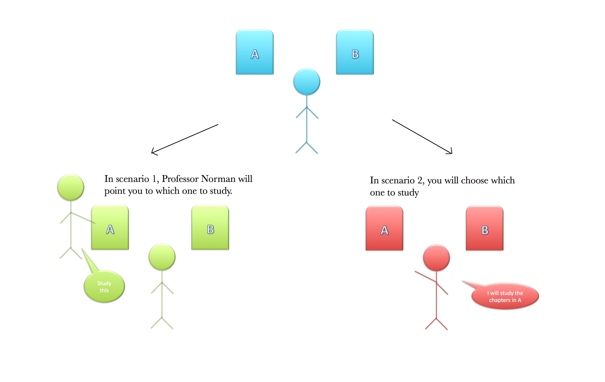

- For PSY 306 final, you can either study book A or book B
- However, you DO NOT know what kind of contents either book A or book B has
- Before encoding :
There is greater BOLD activity in the left striatum in the choice than the fixed conditions
Left striatal activation is significantly related to memory for objects
=> Left striatal activation in choice conditions is correlated with better memory
- During encoding : There is no difference in brain activities between choice and fixed conditions
- After encoding :
In successfully remembered objects in CHOICE conditions, left striatal activation before encoding is correlated with right hippocampal activation
=> Coupling between left striatal activation and right hippocampal activation predicts better memory

- When subjects have a choice, their anticipatory striatal activity before encoding is correlated with better memory
- Successful memory for objects in the choice condition is correlated with interactions between striatum and hippocampus
=> The simple act of choosing indeed activates striatal activity that facilitates the hippocampus during encoding, resulting in better memory
- The researchers have done an eye-tracking study to track how much time the subjects spend on viewing the objects during the choice versus the fixed condition. They actually found that the subjects spent slightly longer time viewing the objects in the FIXED rather than the choice condition!
- Would the subjects without striatum still have better memory for objects during the choice condition? This can test whether striatum-hippocampus is the only interaction important for enhanced memory
- Since the fMRI study only focuses on a specific region of interest (ROI) in the hippocampus, the researchers might have missed other important interactions contributing the the enhanced memory. What would those be?
Murty VP, DuBrow S, Davachi L (2015). The Simple Act of Choosing Influences Declarative Memory. The Journal of Neuroscience